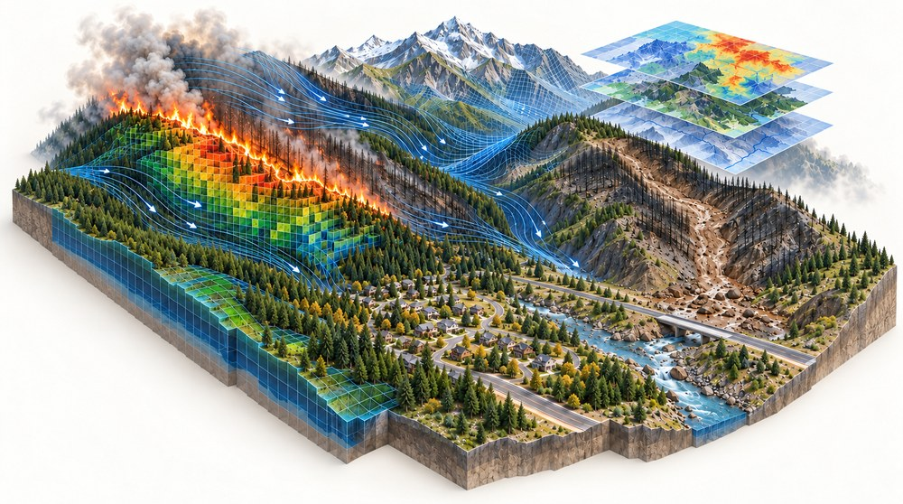
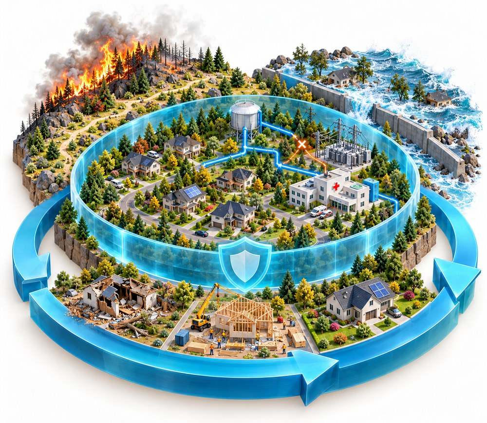
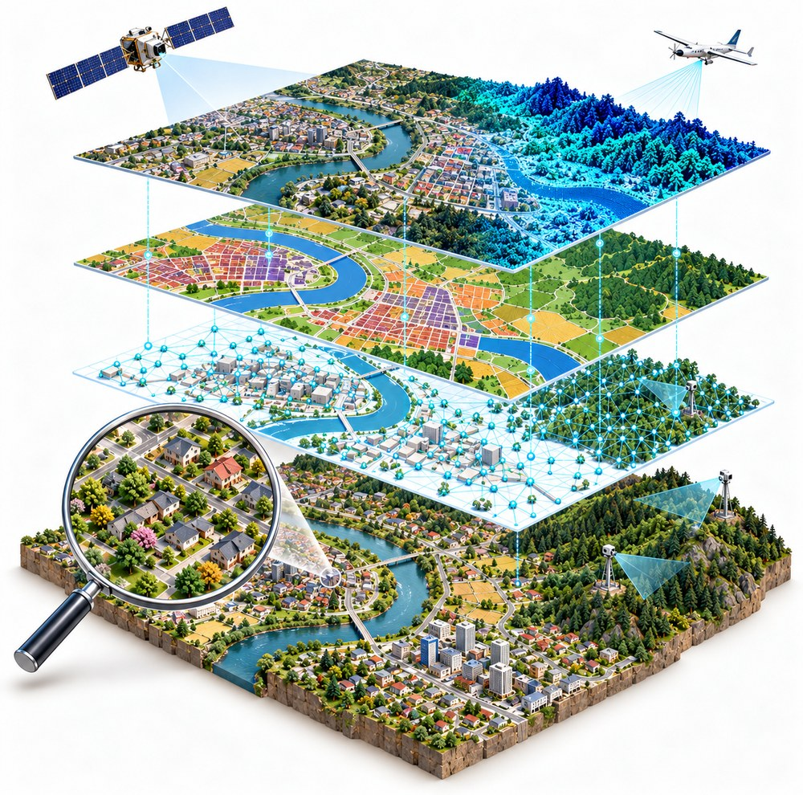

Research
My research focuses on mapping and modeling natural hazards to translate risk information into actionable insights that can empower decision-making.

Computational Modeling
- Wildfires: I use fire spread simulations for wildfire reconstruction and probabilistic risk assessment. To enhance these models, I use data-driven optimization, integrate downscaled wind fields, and couple with urban spread models.
- Climate extremes: I use large-scale climate data and remote sensing imagery on global fire activity to study how pyrogeography is dynamic and complex at multiple scales. I also study extreme fire weather to understand the conditions that enable extraordinary fire behavior like fast fires and pyrocumulonimbus events.

Disaster Resilience
- Disaster risk reduction: I build spatial networks of responsibility to mitigate shared and owed risk (interactive map), and fire spread potential, field-tested in Catalonia to support decision-making during fire suppression.
- Compound and cascading risk: I build multi-criteria decision-making frameworks for cascading hazards like post-fire debris flows to assess risk on interconnected critical infrastructure systems. I also assess compounding climate risk and synchronous extreme fire weather on humans and our cities.
- Recovery and disaster justice: I use multi-channel building permits at parcel scale to reconstruct post-wildfire and post-hurricane recovery, measuring who rebuilds, how quickly, and to what extent. I apply an environmental justice lens to the asymmetric impacts and barriers that compound vulnerability in communities and over time.

Geospatial Data Science
- Image processing: I use high-resolution earth observation data with computer vision models to map local climate zones, enhanced landforms, and land cover.
- Spatial networks: I combine GIS and remote sensing data to build spatial networks on hazards, risk, and responsibility.
- Machine learning: I build machine learning pipelines and leverage geoAI methods and geospatial foundation models to map, extract, and predict key features needed for disaster risk analysis and urban sustainability applications.
- Spatial optimization: I employ spatial optimization on infrastructure systems like California's wildfire camera network to enhance early detection. This extends towards building a multi-sensor fusion platform and assessing the system's vulnerability and resilience especially to future environmental change and climate extremes.
I study at the complex interface of Humans, Environment, & Technology.
Publications
| Year | Title | Venue | Type | Topic |
|---|